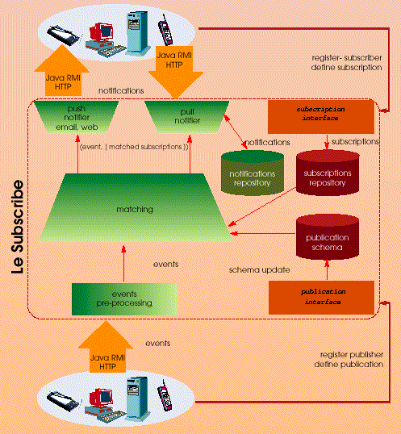
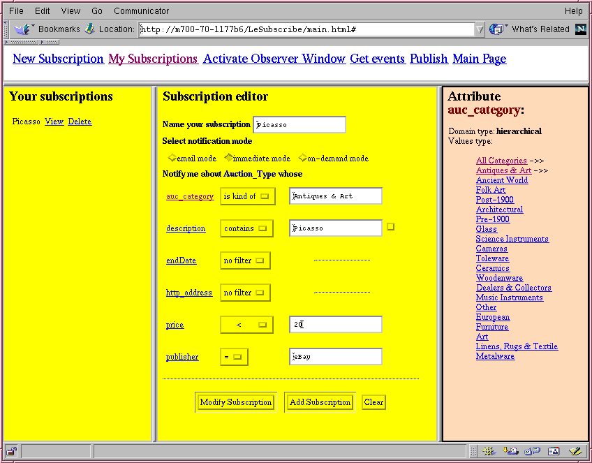
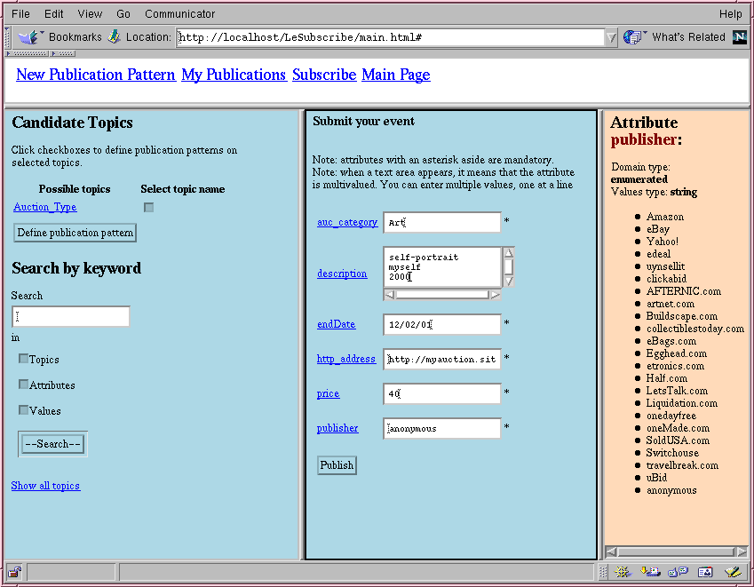
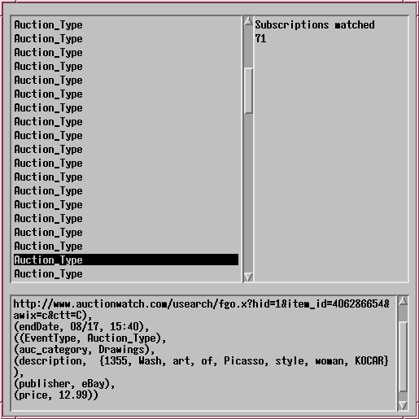
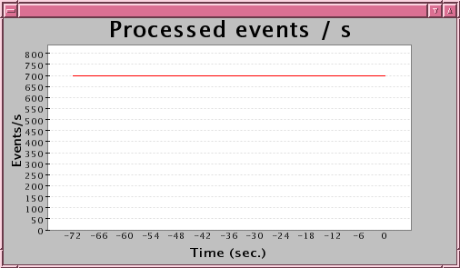
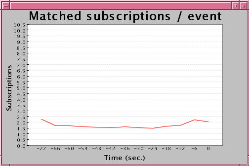
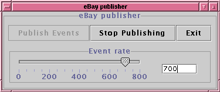
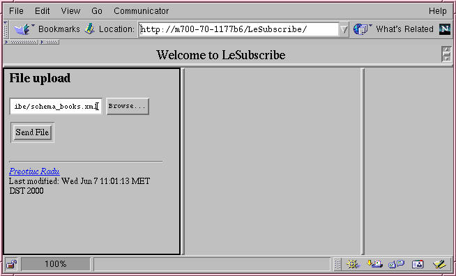
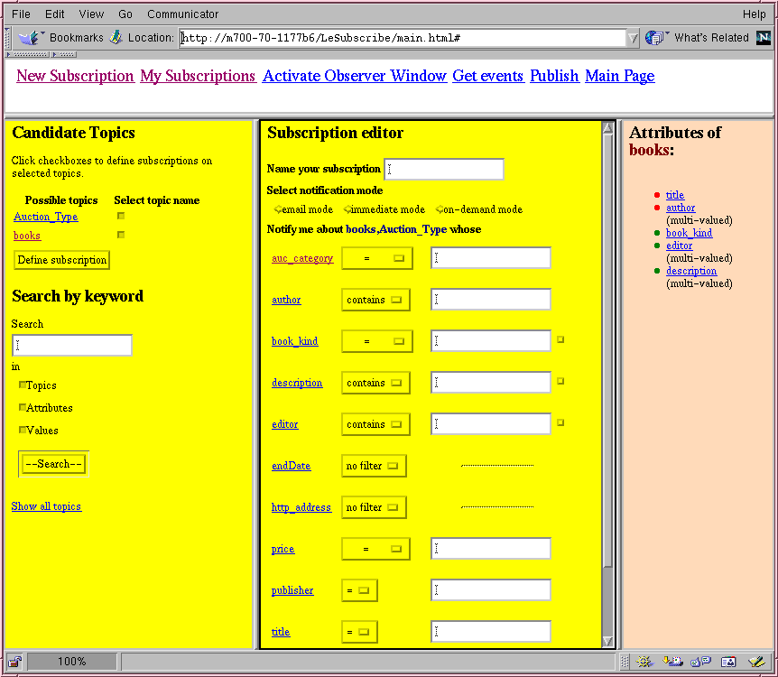

Nowadays there is a proliferation
of selective dissemination of information applications. This is due to
the fact that there is more and more dynamic information available through
the Web. For example, we can easily find in the Web information concerning
stocks, sales, tickets, documents. Web users would like to be notified
when new relevant information is produced. A user may be interested in
receiving a notification when a given stock reaches a certain value. A
classical solution for such applications uses a pull-based approach, where
the client application pulls the server to get the new relevant information.
Nevertheless, to deal with the dynamic aspect of information, these dissemination
of information applications have to notify the interested users in a short
delay. Using a pull-based approach this requires a high frequency pulls
from the client application to the server. If the number of users is large,
then this leads to network overload and server resource contention. Therefore,
the alternative is to use push-based technology.
Publish and subscribe systems are good candidates to use push-based technology. A publish and subscribe system sends the right information to the right users. The information (usually represented as events) is produced by publishers connected to the system and is delivered to the interested users (subscribers) connected to the system. Subscribers define their interests (subscriptions) using a subscription language. The system decouples subscribers from publishers of information. We may have different types of publishers or subscribers connected to the system like web servers, cellular phones, web browsers for example. Publish and subscribe systems are composed of two main components: the filtering engine and the notification component. The former one computes the subscriptions matching an event while the latter one is responsible for the notification processing.
We have defined a content-based publish and subscribe system, called Le Subscribe, which can be used in a Web context. Its main features are:
- A flexible LDAP-like publication model;
- is-kind-of and contains predicates in subscriptions;
- Efficient matching supporting high rate of events with a large number of subscriptions.
- Fast reactiveness. Updates of the publication schema or current subscription set are immediately taken into account by the system.
The publication model
of our P/S system is composed of attributes and topics. Attributes are
identified by a unique name, they are associated with a domain and can
be single or multi-valued. Supported domains are: hierarchical (useful
to depict categories and sub-categories), enumerated, string
and numeric. A multi-valued attribute contains a set of values instead
of a single value. For example, attribute email (specifying the
several email addresses of a user) or description (set of keywords
describing an object) are multi-valued attributes. A topic represents a
set of attributes. Each attribute in a topic may be mandatory or optional.
In our model events are represented as a set of attribute-value pairs and
concern one or more topics. This allows an event to be represented by different
points of view. Each event must provide a value for the mandatory attributes
of the topics concerning the event. Events may provide a value or not for
the optional attributes.
Each published event is associated with a certain publication pattern. A publication pattern is defined by a publisher and it represents a set of conditions that must be verified by the concerning events. It specifies the set of topics the event must belongs to. Other conditions may be specified on the allowed values of the attributes, like predefine a certain value for an attribute or constrain the set of values of the attribute to a subset of the domain of the attribute.
In our system, subscriptions consist of conjunction of predicates. Each predicate represents a condition over an attribute and it is expressed as {attribute, comparison operator, value}. The available comparison operators depend on the type of the attribute. For example, the is-kind-of comparison operator can only be used with attributes belonging to hierarchical domains while the contains comparison operator can only be used with multi-valued attributes. The equal comparison operator can be used with any type of attribute.
Here
you will find a short presentation of our publish and subscribe system
and demo.
Figure 1 describes the
architecture of our publish and subscribe (P/S) system. Two types of entities,
publishers and subscribers, can access the P/S system through two different
protocols: HTTP and Java RMI. This allows users (using a Web browser) or
"stand-alone" Java applications to access our P/S system. Subscribers register
with the system and add/delete subscriptions through its subscription interface.
Similarly, publishers register with the system and add/delete publication
patterns through its publication interface.
The system consists of several components which may all share the same addressing space or may be distributed across several machines. The main components of the system are: event pre-processing, matching, notifier and Web-interface. The several components were developed using mainly the Java programming language. The Web-interface component (based a servlet technology) is responsible for the HTTP interface of the system. It works as a layer between the system and publishers/subscribers that access the P/S system using the HTTP protocol.
Figure 1: Architecture of the publish and subscribe system.
The event pre-processing component is responsible for executing some pre-processing on the events when they are received by the system. This pre-processing may include the checking of all conditions specified by the publication pattern of the event.
The notifier component is responsible for the notification processing: send the submitted events to the interested subscribers. Each notification received by a subscriber is composed of an event and the set of subscriptions (just their identifiers) of the subscriber that are matched by the event. The system supports three notification modes email, on-demand and immediate. The notification mode of a subscription defines how a notification is handled by the P/S system. The subscriber specifies the notification mode associated with a subscription when she defines the subscription. Notifications associated with subscriptions in email notification mode are sent as an email to the address previously defined by the subscriber. Notifications relative to subscriptions in the on-demand notification mode are stored in the system. The subscriber can query the system at any moment to obtain the new stored notifications. Finally, notifications associated with subscriptions in the immediate notification mode are immediately sent to an application (see Figure 4 as an example of such applications) previously started by the subscriber. For each notification mode we implemented different types of notifiers, email notifier, web notifier and pull notifier for handling the email, immediate and on-demand notification modes, respectively. Each notifier component maintains information about each subscriber. The type of information maintained depends on the type of the notifier. For example, the email notifier needs to maintain the set of subscriptions made in email notification mode and the email address for each subscriber.
Finally, the matching component is the component responsible for computing the subscriptions verified by each event submitted to the P/S system. The result of the matching is then sent to the right notifiers taking into account the notification mode of the verified subscriptions. This component is composed of two sub-components, one implemented in Java which is responsible for the interaction with the other components of the system, and other one implemented in K that performs the matching algorithm. This sub-component was implemented in K, instead of Java, due to performance reasons, since the matching between each event and the subscriptions needs to be done in a very efficient way to assure that the system is able to support a high rate of events with a large number of subscriptions.
The persistent state of the
system (subscriptions and publication schema for example) is stored in
a database which is accessed using JDBC.
The demo was executed
in an auction context. In this case each event describes an object
put on for auction and it is associated with the topic Auction_Type.
This topic has the following attributes:
auc_category, description,
endDate, htt_address, price and publisher. Attribute auc_category
specifies the category of the object put on for auction and belongs to
an hierarchical domain having almost 5000 elements (see left frame of Figure
2). Attribute description is a multi-valued attribute containing
a set of keywords that describe the auction object. Attributes endDate,
http_address and price specify when the auction finishes, a
http page containing more information about the auction object and the
initial price of the object, respectively. Finally, attribute publisher
belongs to an enumerated domain describing the valid publishers in this
example (e.g. left frame of Figure 3).
The demo was executed on two interconnected laptops. One had running the P/S system and the other one had running the Apache web server, a database system (where the persistent data of the P/S system is stored), a notifier component, responsible for sending the immediate notifications and two Java applications that simulate publishers (see slide 14). Due to Java security restrictions, the notifier component responsible for sending the immediate notifications and the Web server must be executed on the same machine.
Figure 2 shows the subscription page of a subscriber accessing the P/S system through its Web interface. This page shows a subscription made by the subscriber. This subscription specifies that the subscriber is interested in events whose auc_category attribute is a sub-category of Antiques & Art, whose description attribute contains the word Picasso, whose price attribute is lower than 20 and whose publisher attribute is equal to eBay.

Figure 2: Subscription page of the P/S system using the Web interface.
Figure 3 shows the publication
page of the P/S system available using the Web interface. Publishers accessing
the system using this page can define/remove publication patterns and submit
events to the system. This figure shows an example of an anonymous
publisher submitting an event to the system. In this case, the publisher
has to supply a value for all mandatory attributes of all topics concerning
the event being submitted. For optional attributes (description
in this example) the publisher may provide values or not.

Figure 3: Publication page of our P/S system using its Web interface.
Web subscribers can also
receive the notifications concerning their subscriptions made in the immediate
mode. In order to be able to receive them they need to activate their notification
window. This window is a Java applet application which receives the notifications
from the web notifier of the P/S system. The applet allows the user
to browse through the last received notifications. For each notification
it is shown the topic (or topics) of the event, the subscriptions matched
by the event and the content of the event (its attribute-value pairs).

Figure 4: The Java applet window that web subscribers can use to receive their immediate notifications.
To show the performance of the P/S system, we initialized it with 250000 subscriptions generated randomly. Each subscription contains three predicates, one specifying an equality over the publisher attribute, another one specifying an inequality (greater than or less than) over the price attribute and the last one specifying an equality (for 75% of subscriptions) or an is-kind-of (for 25% of the subscriptions) over the auc_category attribute.
The P/S system offers two monitoring windows that display its performance. One shows the number of events per second processed by the system during the last 72 seconds (Figure 5) and the other shows the average number of subscriptions matched per event also during the last 72 seconds (Figure 6).
We also implemented a Java
application that simulates a publisher that sends events at a given rate
to the P/S system using the Java RMI protocol. This application uses real
data to create the events. The data was collected from the eBay site and
stored in a file which is read by this publisher application to generate
the events. The event rate can be set between 0 and 800 events per second.
Figure 5 and 6 shows the monitoring windows of the P/S system for the event
rate specified by the publisher application (see Figure 7). Another publisher
application with data collected from the Amazon auction site is also available.

Figure 5: The monitoring window showing the number of events processed per second during the last 72 seconds.
For the configuration used
in the demo the system is able to achieve a maximal throughput of 700 events
per second. Figure 5 and 6 display the performance of the system when 700
events per second are submitted to the P/S system. For this event rate,
the average number of subscriptions matched per second is about 1150 (as
can be seen in Figure 6).

Figure 6: The average number
of subscriptions matched per event during the last 72 seconds.

Figure 7: the Java publisher application.
Modifications of the publication
schema (defining new topics and attributes) of the P/S system can occur
at any moment and are immediately made visible to all publishers/subscribers
currently connected to the system. The modifications to the publication
schema are defined as an XML document, that is sent to the system using
the Web interface. In Figure 8 we show how subscribers and publishers can
modify the publication schema using the Web interface of the P/S system.
The schema_books.xml file defines a new topic in the system, books,
having the following attributes: title, author, book_kind, editor and
description (this new topic can be seen in the left frame of Figure
9). Publishers that are specialized in books can now add more information
(describe them more precisely) about their auctions items by associating
their newly published events also with this topic. Subscribers interested
in books are now able to define more precise subscriptions (for example,
specify the author of the book they are interested in).

Figure 8: Upload of a user defined XML document specifying a new topic in the P/S system.
Figure 9 shows the subscription
page after the system has processed the modifications to the publication
schema. Subscribers (and publishers) now see two topics: Auction_Type
and
books. Subscribers can now specify that they are interested in events
concerning both topics simultaneously (as is shown in the middle frame
of Figure 9). The subscriber can specify conditions over any attribute
belonging to both topics.

Figure 9: The subscription page after the topic books has been added to the publication schema.